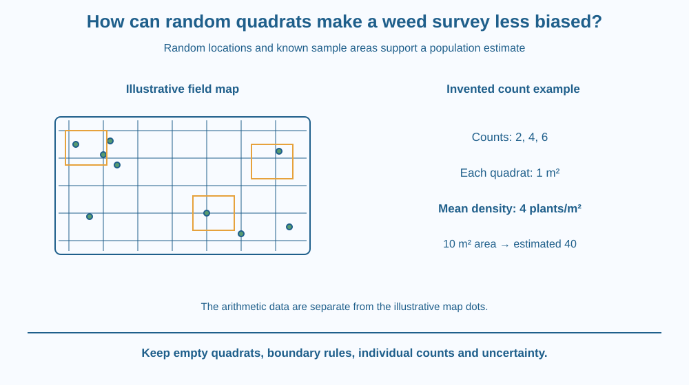

Estimate a plant population from random quadrat sampling. Distinguish a sample from a census, calculate density from known areas and explain selection bias. Keep uncertainty visible when plants are clustered rather than assuming a few convenient green patches represent the whole site.
A field is too large to count every small plant. One student places a square frame over the densest patch and multiplies that count across the field. The arithmetic is neat, but the chosen patch is not a fair representation of the whole area.
A sampling method must decide where to look before seeing which locations support the desired answer. Random placement can reduce a particular selection bias, while known frame area connects counts to density.
The useful result is an estimate with conditions, not a disguised claim that every individual was counted.
A quadrat is a defined sampling area, often represented by a square frame. Its size must be known if counts are to be converted into number per unit area. A quadrat is not automatically one square metre simply because it is square.
Random sampling selects locations through an appropriate chance procedure rather than personal preference for dense, sparse or convenient patches. Within the defined sampling region, this helps avoid deliberately choosing the result.
A site map can use coordinates. Randomly selected coordinate pairs identify quadrat positions, with a clear rule for how the frame aligns to each point. The method should also define what happens at boundaries or inaccessible areas without quietly replacing inconvenient samples.
A boundary rule prevents inconsistent counting. For example, include plants whose base lies on specified edges and exclude those on the opposite edges. The exact convention should be stated and applied consistently.
Calculate mean count per quadrat, then divide by quadrat area to estimate density. Multiply by the total target area for a population estimate if the sampling assumptions support that step.
For invented counts of two, four and six plants in equal one-square-metre quadrats, the mean density is four plants per square metre. Over a hypothetical ten-square-metre target area, the estimate is 40 plants. It is not an actual census or field observation.
Clustering can make counts vary substantially. More suitable samples and a good design can improve the estimate, but no small set guarantees an exact total. Record the individual counts and the spatial context instead of reporting only one confident-looking multiplied number.
Random placement also differs from measuring one leaf with a grid. Leaf-area estimation partitions one object's outline; quadrat sampling uses selected locations to infer properties of a larger population. Both need known area, but their targets and uncertainty sources differ.
Draw a field map with plant dots, including a cluster and sparse regions. Overlay a coordinate grid. Select locations by an unbiased paper draw without moving them to more interesting places after inspection.
Place identical quadrat outlines at the chosen coordinates and record each count. Keep the sampled areas separate from the unobserved remainder. The estimate uses the sample to describe that remainder under assumptions.
Now compare a deliberately dense-patch sample. Its larger multiplied total can result from selection bias, not from superior arithmetic. This comparison shows why measurement design belongs before calculation in a trustworthy survey.
The SVG shows a dotted field map, coordinate grid and several selected quadrats. A side table contains the invented counts two, four and six for the arithmetic example.
A highlighted dense patch demonstrates the danger of choosing locations by appearance. The estimated 40 plants is labelled hypothetical and distinct from the actual dots drawn in the illustrative map.
The diagram includes a boundary-counting note. It does not claim that three quadrats suffice for every real population or that random placement alone removes identification mistakes and every other survey limitation.

Agricultural and ecological surveys can use sampling when a full count is impractical. The appropriate design depends on the organisms, area and decision. A small classroom frame is an introduction, not a universal field protocol.
A school garden map can be surveyed on paper or from approved existing observations. Students should not enter crops, disturb protected vegetation or handle unknown plants to fill a table.
Calling a plant a weed depends on the management context. Identification and counting rules need clarity before the survey, otherwise different observers may count different categories while using the same frame size.
Use squared paper, a pencil and a paper draw of coordinate numbers.
The map and counts are invented. You can count all dots afterwards to compare the estimate with the known paper total, but label that as a model check. It does not establish the error expected in every real survey.
Why might strongly clustered plants require more careful sampling than an almost uniform paper pattern? Consider how much counts can differ between locations.
Now imagine replacing every inconvenient empty quadrat with a greener nearby patch. What happened to the method even if the final sample size stayed unchanged? Explain why random selection must be preserved through the actual counting procedure.
What must be known to convert a quadrat count into density?
Answer: C — Density relates count to a known sampled area.
Why choose positions randomly before counting?
Answer: A — An unbiased location rule helps avoid choosing only dense or convenient patches.
Invented counts 2, 4 and 6 come from 1 m² quadrats. What is mean density?
Answer: B — The mean count is 12 divided by 3, or 4 in each one-square-metre sampling area.
Write a survey protocol with target definition, area, quadrat size, selection procedure, boundary rule and recording table. Include an estimate calculation using the invented example or your paper map.
State one source of uncertainty and distinguish the estimate from a census. Your protocol should remain usable when some randomly selected quadrats are empty, rather than treating zero counts as failed observations to replace.
A zero count can be valuable data. Removing empty samples because they look uninteresting changes the population picture and can bias the estimate upward. Random sampling gains value when the procedure respects both occupied and unoccupied locations rather than searching only for visible evidence of plants.
Random quadrats estimate population density from known areas while reducing location-selection bias; keep zero counts, individual results and uncertainty visible.